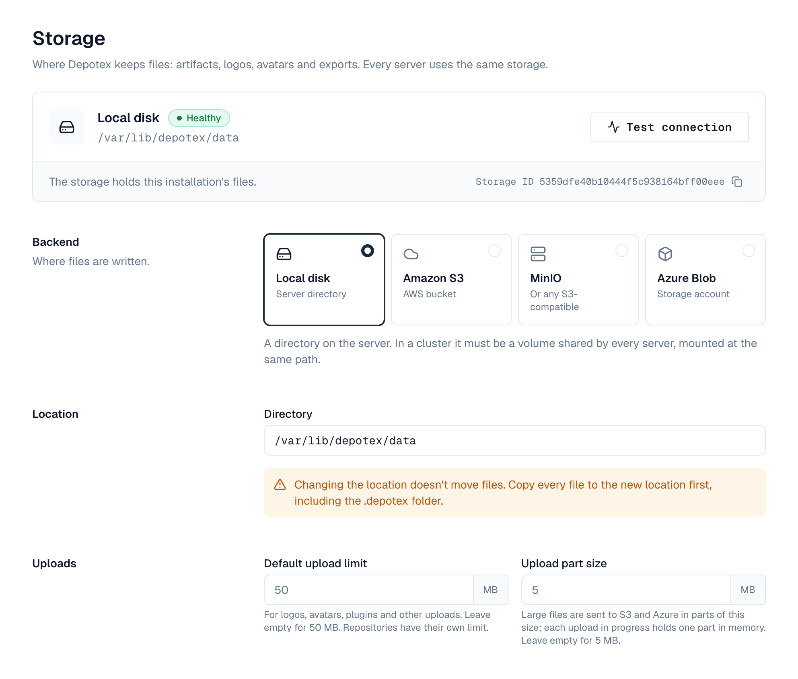

1. Overview
Depotex keeps files — artifacts, logos, avatars, plugin packages, log exports — in one storage location chosen during setup: a directory on the server, Amazon S3, MinIO or another S3-compatible service, or Azure Blob Storage. Super admins can change it later under Settings → Storage. Every server of a cluster uses the same storage. Available on every license tier.
2. Change the settings
The top of the page shows the storage in use: its backend, where it points, a status (Healthy, Not shared, Another installation or Not checked) and the storage ID, which you can copy. Below it are the settings to change.

- Backend and location — Pick the backend from its card (Local disk, Amazon S3, MinIO or Azure Blob) and say where the files are: a directory, a bucket and region, an endpoint and bucket, or a storage account and container.
- Credentials — Access keys for S3 and MinIO, an account key for Azure. They're stored encrypted and never shown again; leave a key empty to keep the saved one. On AWS and Azure you can leave them empty to use the server's IAM role or managed identity: clear the S3 access key (the saved secret key goes with it) or choose Remove saved key for Azure. For S3 you can also give a role to assume (below).
- Uploads — The default upload limit (50 MB) applies to logos, avatars, plugins and other uploads; repositories have their own limit under Settings → Repositories → Defaults and network. The part size (5 MB) is how large files are sent to S3 and Azure: larger parts mean fewer requests and more memory per upload in progress.
- Test — Test connection, beside the storage in use, writes a small file with the settings below (without saving them), reads it back and deletes it, so a key without write, read or delete access is caught before you save. The result shows under the storage in use.
- Save — The bar at the bottom says when there are unsaved changes, and reminds you to test first when you switch backend. Saving runs the same test. The server you're on switches at once; the others within a minute, without a restart.
An upload over its limit is stopped as soon as it passes the limit, and nothing of it is kept.
3. Using an IAM role for S3
Depotex can reach S3 without stored keys, with the AWS credentials the server already has: an EC2 instance profile, an ECS task role, or an EKS service account role (IRSA or Pod Identity). Leave Access key ID and Secret access key empty and choose Test connection.
Under Assume a role (optional), give a Role ARN to make Depotex assume that role — with the keys, or with the server's own role when there are none. Use it for a bucket in another AWS account or a role narrower than the server's. Add an External ID when the role's trust policy asks for one. Depotex renews the role's temporary credentials before they expire.
- Every server of a cluster needs the same access: the same instance or task role, or permission to assume the role (sts:AssumeRole).
- The role (or the server's role) needs s3:PutObject, s3:GetObject, s3:DeleteObject and s3:ListBucket on the bucket.
- Running Depotex in Docker on EC2 with IMDSv2: set the instance's metadata hop limit to 2, or containers can't reach the instance role.
- When credentials can't be had, the test says so: the server has no role, or the role can't be assumed (check its trust policy and the external ID).
storage:
backend: s3
s3:
bucket: depotex-files
region: eu-west-1
role_arn: arn:aws:iam::123456789012:role/depotex-storage # optional
external_id: depotex-prod # optionalThe same fields are in the setup wizard and in the setup configuration file (role_arn, external_id).
4. The storage ID
Each installation writes a storage ID to its storage (in a .depotex folder) and to its database. A server checks the two match when it starts, and the status beside the storage in use shows the result:
| Situation | What happens |
|---|---|
| A second server of a cluster can't find the ID | Its storage isn't the cluster's shared storage — for example a local directory that isn't a shared volume. The server refuses to start; mount the shared volume or bucket and start it again. |
| The storage holds another installation's ID | Two installations must never share storage. In a cluster the server refuses to start; on a single server it starts so you can fix the settings, the system check reports a problem, and file repairs are disabled. |
| The only server finds no ID | The storage is new or was emptied; the ID is written again. |
The system check tests this on every server (Shared storage).
5. Moving to another location
Changing the location doesn't move files. Copy every file to the new location first, including the .depotex folder, then save the new settings.
If the new location doesn't hold this installation's storage ID, the test (or saving) says so and Confirm the new location appears: tick that the files were copied there (or that there are none yet) before Save works. A location holding another installation's ID is always refused.
6. Events
storage.settings.update (before and after, blocking) is raised when the settings change; it carries the backend, location, endpoint, region and limits, never credentials. See Events.
7. Permissions
| Permission | Who | Allows |
|---|---|---|
| storage:admin | Super admins only | Viewing, testing and changing the storage settings |
Every change and every test is recorded in the audit log.